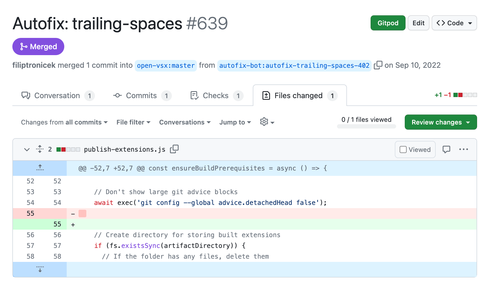
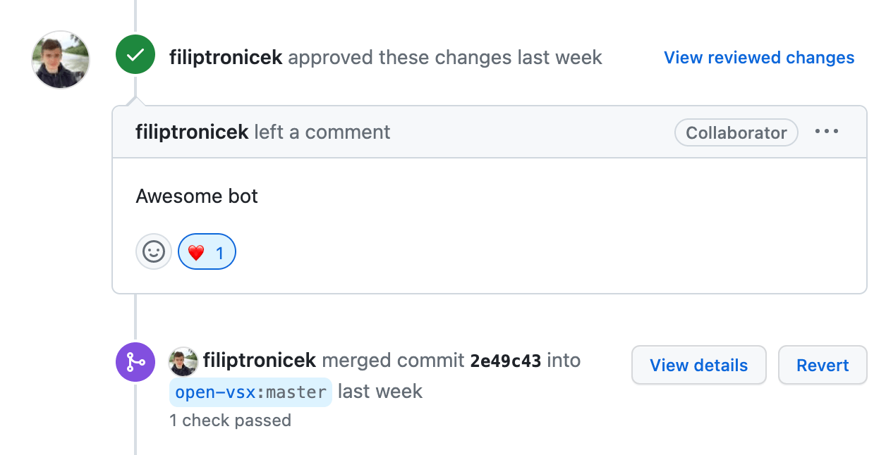
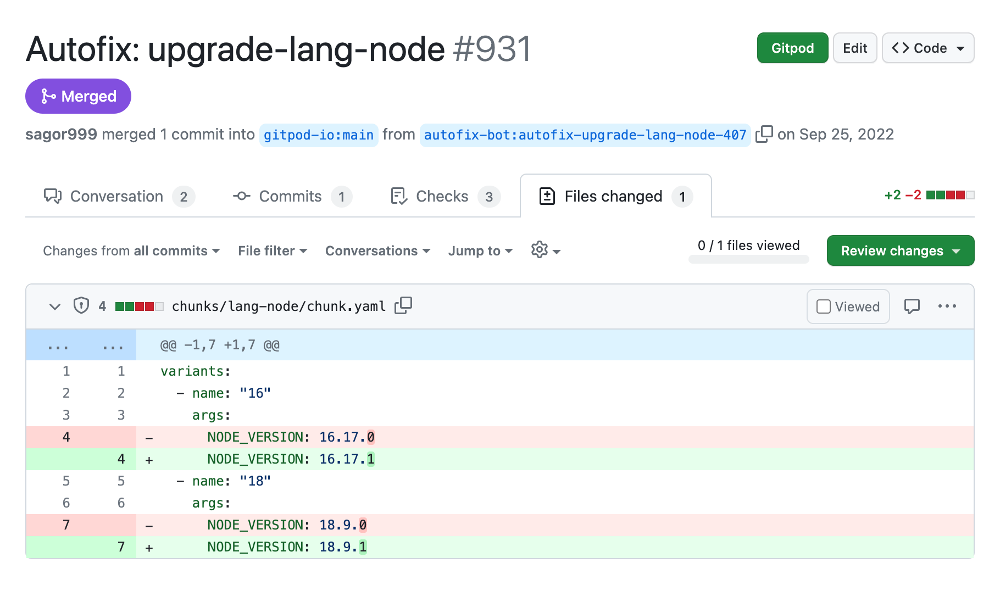
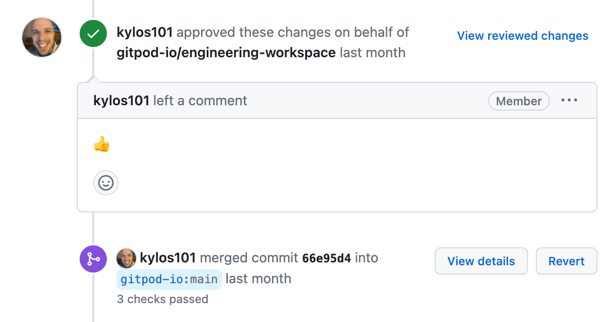
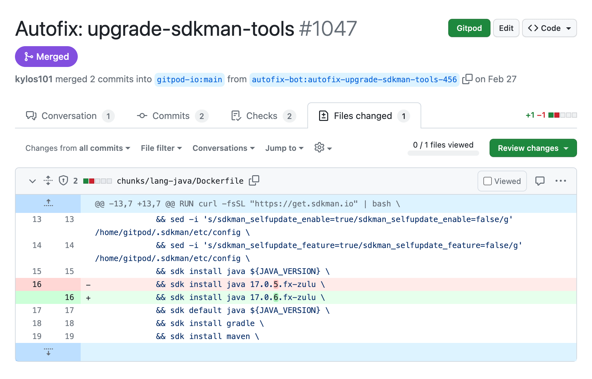
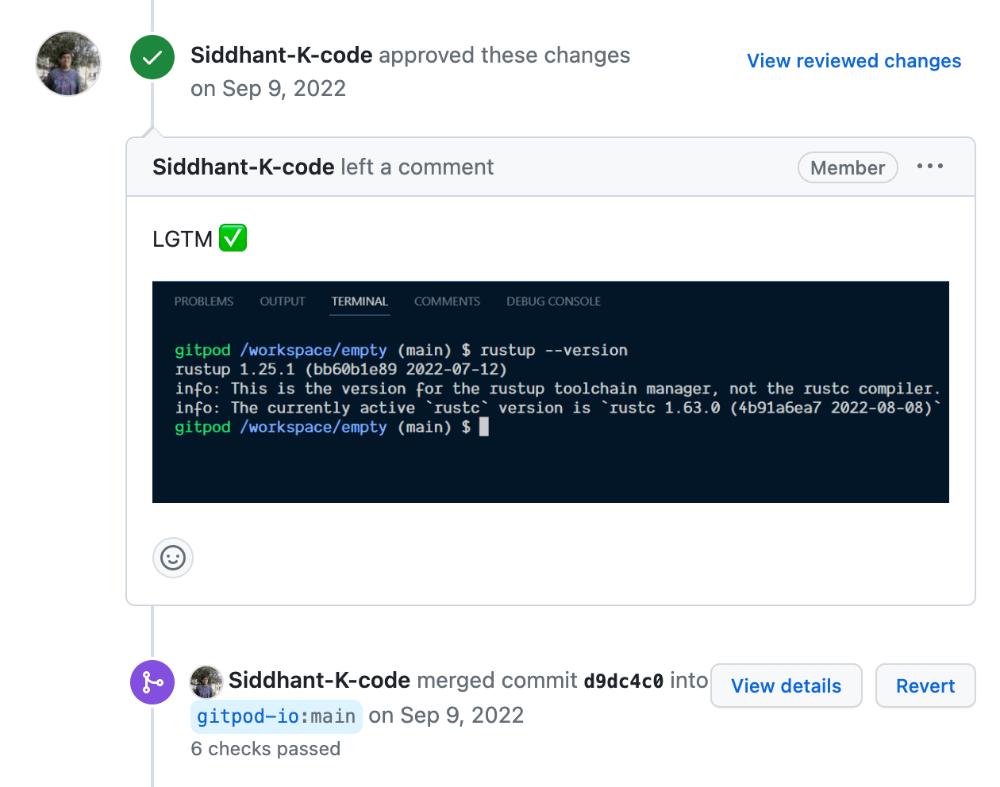
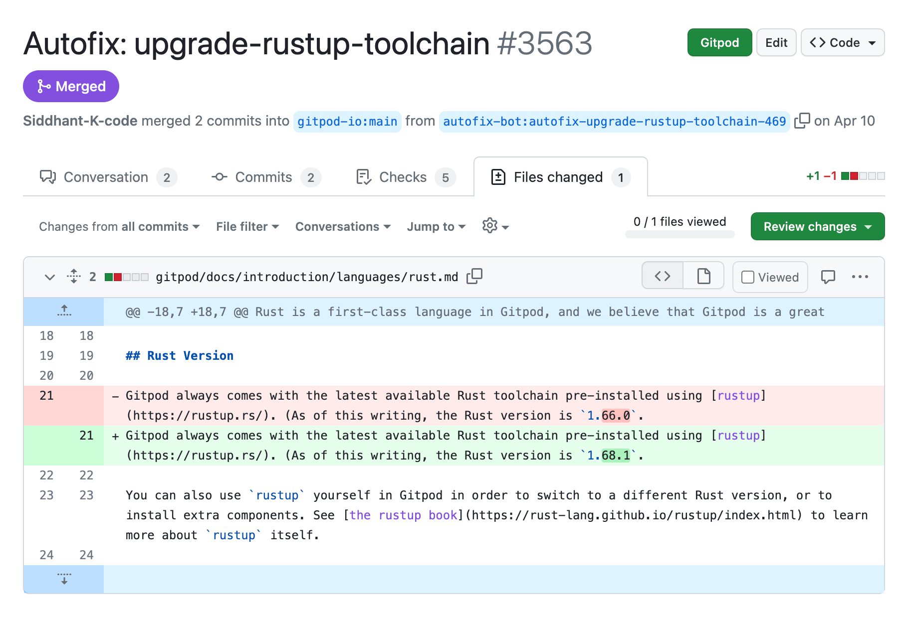

Automate the little things. Keep your repos neat and up-to-date, risk-free.







- ✓ Automates trivial fixes like trailing spaces and outdated dependencies
- ✓ No breaking changes -- all fixes are risk-free
- ✓ Free and open-source, with optional yearly subscription to support development